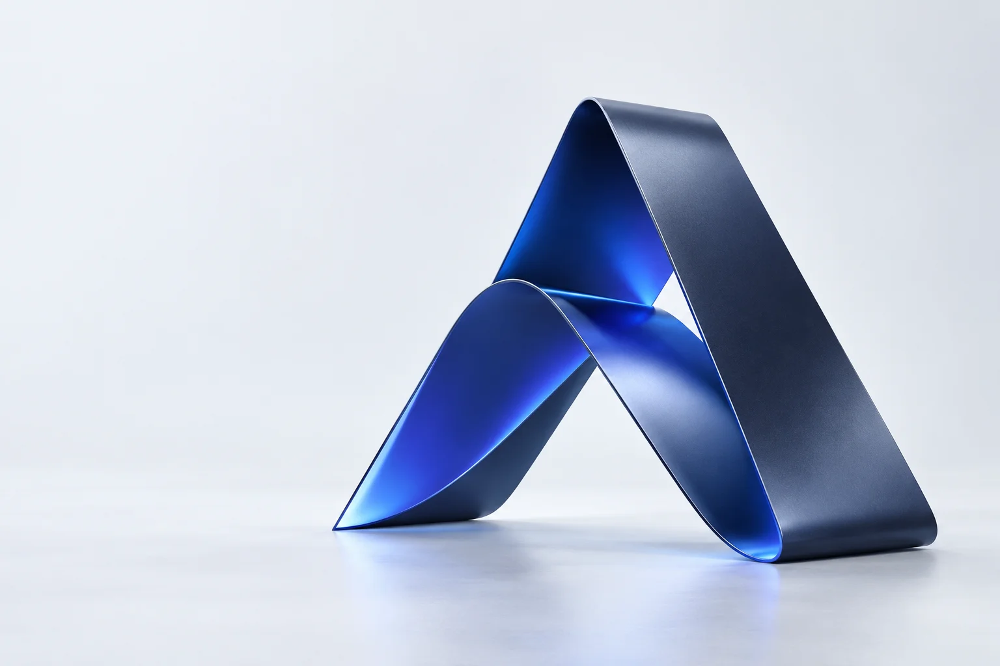

Japanese dining
Katori
katori.com.au
Custom software, websites and practical AI.
Built around the way your business works.

01WHAT WE DO
From a better website to a business-critical application, we connect your goals with the right technology.
Purpose-built applications that work around your people, processes and goals.
Explore, prototype and integrate AI tools around a clearly defined business need.
Thoughtful websites that connect your brand, your audience and your business goals.
Understand what is holding your software or website back, and get it moving again.
02WHY ANSEN
We believe meaningful digital transformation begins with understanding what makes your organisation different.
Get to know AnsenYour workflows, goals and people shape the solution.
Clear plans, regular updates and opportunities for feedback.
A collaborative approach, from the first conversation to ongoing support.
03SHOWCASE
A new idea, an existing challenge, or a project that needs a fresh perspective. Let’s start a conversation.
Enquire about services